Com molts sabreu, encara estic a 3r
de carrera. És un mojón de quilo estar
a 3r i que molts amics ja hagin acabat
la carrera, però bueno; anem avançant.
La cosa bona d'estar a la carrera és que puc fer un
rànquing d'assignatures. Normalment, el faig al meu compte de Twitter privat, però el faig
molt breu i amb poc context. És per això que
aprofito que ara tinc un blog i us explico el
meu rànquing d'assignatures.
Explicacions Publicació electrònica
A publicació electrònica s'aprèn com dissenyar
aplicacions, pàgines web, i automatitzacions. També
s'expliquen nocions bàsiques de codi amb HTML, CSS
i JavaScript.
Abans de començar el trimestre (i perquè estava
gaudint del meu estiu, en comptés
de llegir la guia docent) pensava que aquesta
assignatura anava de maquetar per fer publicacions
en línia. Doncs no, resulta que anava de fer webs
i tal. És clar, quan jo vaig llegir això em va semblar
un downgrade (abaixada notal en català)
en comparació amb maquetar... Però
resulta que l'he acabada gaudint molt.
Amb el meu grup, hem fet una web "fandom Arcane";
una web per la companyia d'animació fictícia "Blue
don't Stop Media"; un prototip d'aplicació de
streaming de pel·lícules indie; una aplicació de
catalogació per a una llibreria (quan l'Artal s'obri
la seva llibreria...); i una web per una convenció
fictícia de videojocs anomenada "Barcelona International
Games". També vam fer tres treballs teòrics
bastant xulos: en un vam dissenyar l'estructura
d'una web fent servir el "cardsorting"; després vam
explorar l'evolució dels mitjans digitals des d'una
perspectiva anticapitalista; i finalment vam analitzar
la web de GenCat i l'app de SheIn per posar-les
a parir en qüestions d'heurística.
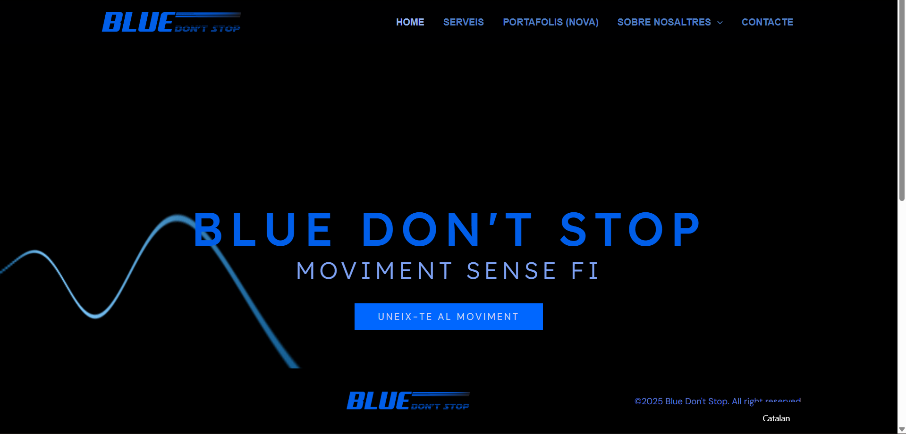
Ràdio
Ràdio s'ha mantingut en la seva posició. És
un mitjà que sempre m'ha agradat molt. Quan esmorzo
sempre escolto la ràdio i, la veritat, m'agrada molt més
que la tele.
L'assignatura separava molt la part pràctica
de la part teòrica, cosa que m'ha agradat molt.
Odio bastant quan la part teòrica de l'assignatura
es resum en explicar el que aprenem en la pràctica,
però afegint detalls innecessaris que s'aprenen
quan un està treballant en l'àmbit. Això no és teoria,
és omplir una part de l'assignatura perquè t'obliguen
a explicar quelcom...
La teoria es basava en la lectura de papers amb relació al mitjà
radiofònic, un test de la lectura i un petit debat sobre aquesta. Després,
al finaldel trimestre, hem tingut un examen teòric que consistia
a aplicar els coneixements adquirits a la lectura
per defensar o rebutjar una idea. Les meves lectures preferides
van ser dues: Del zine al podcast. Repensar la cultura de la
participación desde un análisis comparativo de los medios alternativos
de David García Marin i Radios Pirata y Radios Libres
de Miguel Aguilera.
La pràctica va consistir a crear un programa de ràdio
i produir-lo a l'estudi de la universitat... I que
bé que ens ho vam passar fent-ho. No us deixaré tot un
programa aquí perquè són 30 minuts, però us deixo
un dels anuncis que vam fer i un enllaç per escoltar algun
programa. Us recomano que escolteu el segon o el tercer capítol,
són objectivament els millors.
Disseny 3D
Per desgràcia, 3D ha caigut baix. No és que odiï 3D
profundament, simplement que el programa (Maya) m'ha
posat molt nerviós i només hem tingut un parell de
mesos per aprendre a modelar, texturitzar i il·luminar.
Com que ho he passat bastant malament, i el projecte
final consistia a modelar un edifici (jo soc més de
fer personatges), el poso en 3r lloc. No és que no m'agradi,
simplement crec que no he gaudit l'assignatura tant com altres.
3D m'ha proporcionat amb coneixements que utilitzo de
forma creativa, personal i amb gust. O sigui que ja us podeu
imaginar que estar en 3r lloc no és res del tot dolent, en aquest cas.
Us deixo amb algunes imatges per mostrar-vos el que he anat fent!
Les imatges amb més d'un objecte corresponen al treball final, on
jo vaig fer l'hotel.
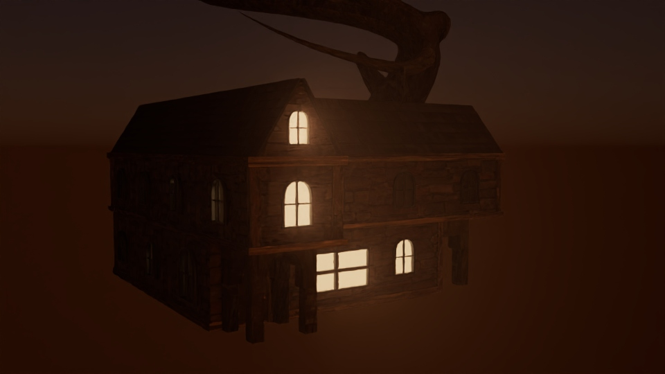
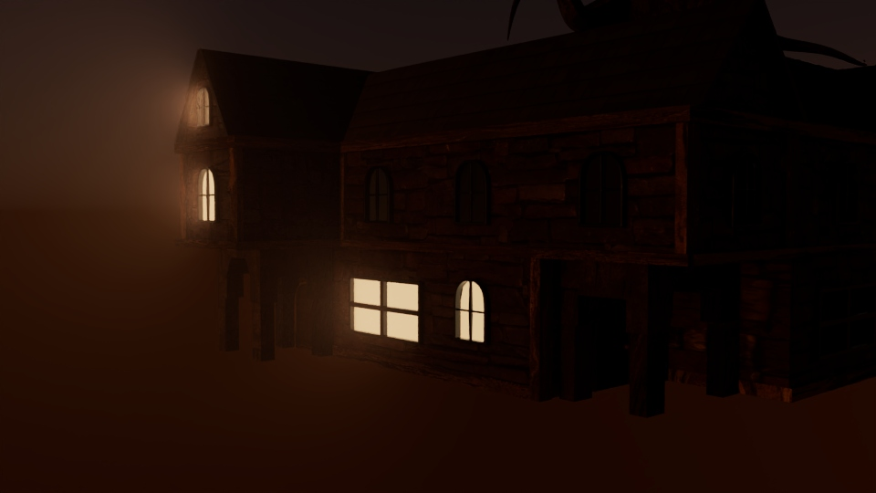
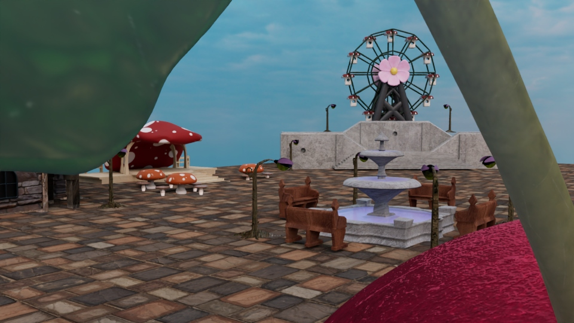
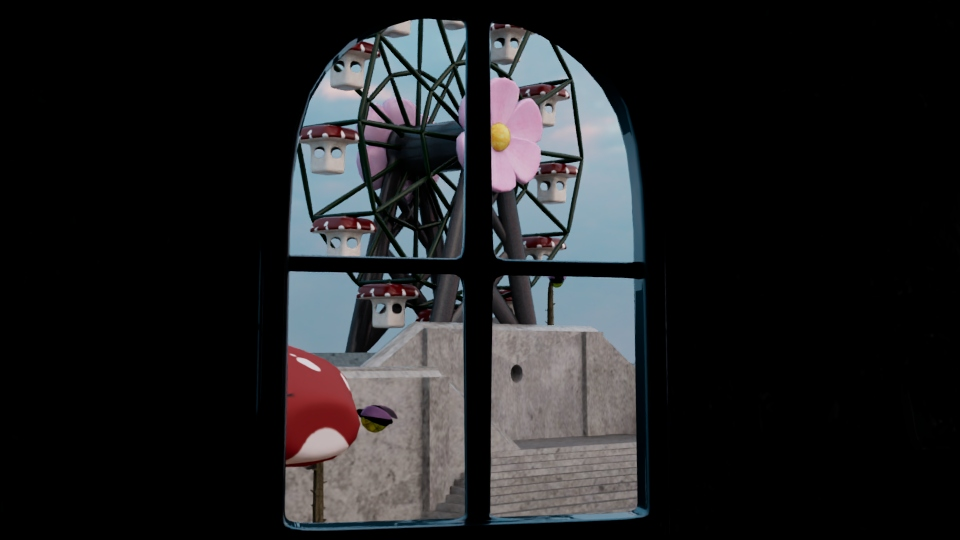
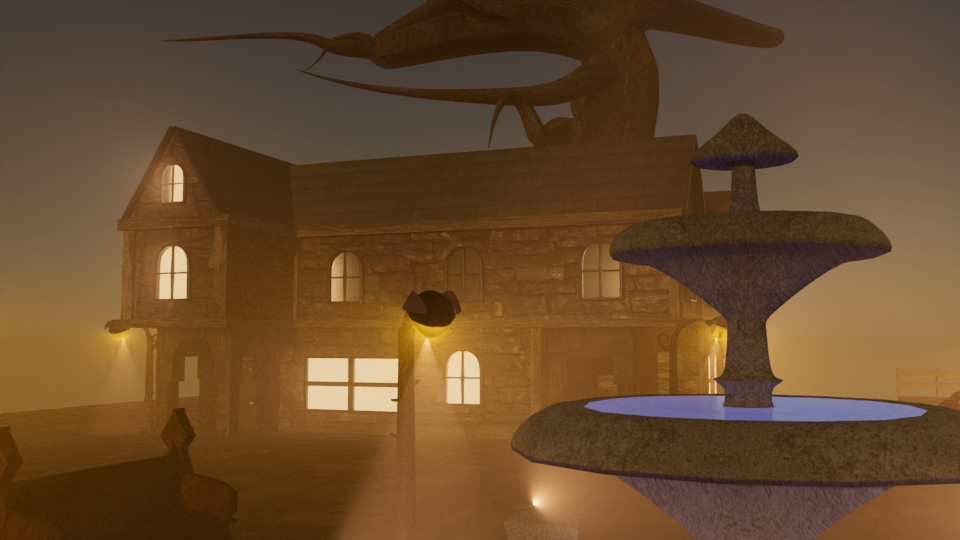
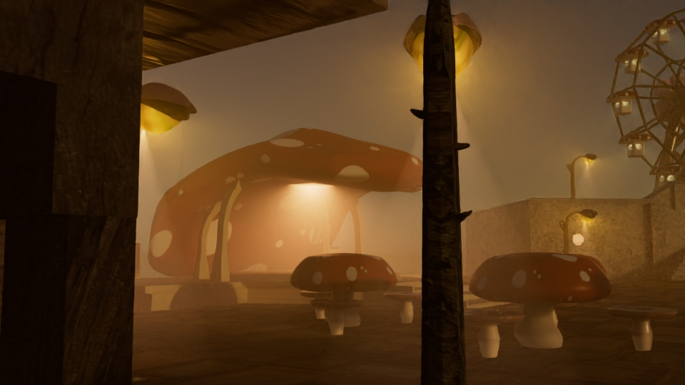
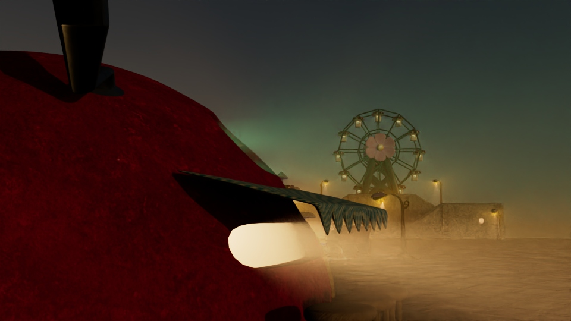
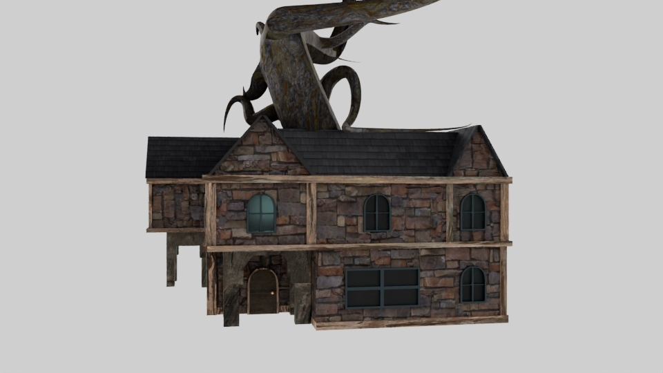
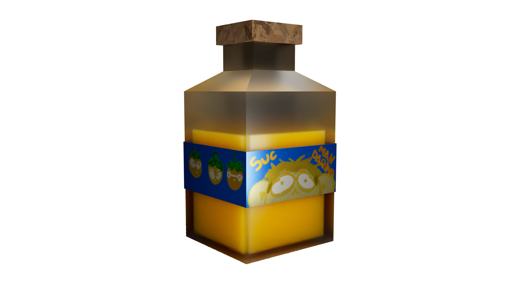
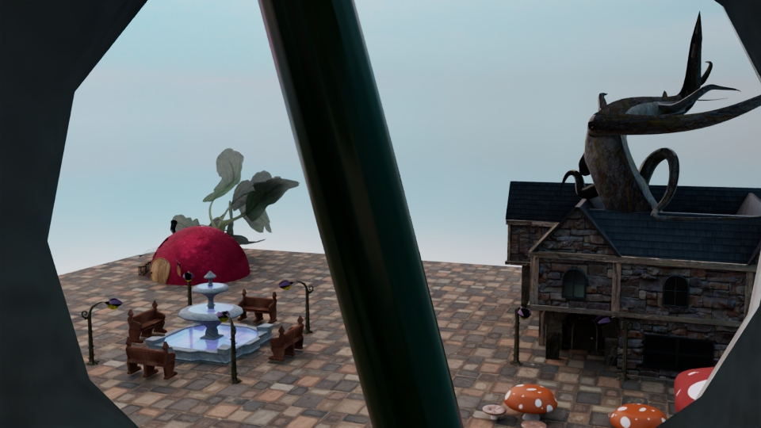
La imatge en 3D del Suc de Mandarina és un sticker que rebrà
la gent subscrita a la Newsletter física! Pots inscriure't en
el formulari que trobaràs en aquesta mateixa web, a l'apartat
"newsletter". Ah! Si tens una idea per un sticker en 3D, no dubtis
a suggerir-me-la per Twitter o per on vulguis!
Televisió
Què dir de tele. Seré breu (he d'anar a estudiar per l'examen
d'aquesta mateixa assignatura). El Joan Jordi em cau molt bé,
és molt bon professor. Simplement estic cansadi de fer vídeos,
tele, i cinema. No m'hi vull dedicar. No em pregunteu per què
faig audiovisuals aleshores, que us pego (és broma, em pots preguntar
el que vulguis). Sincerament, m'interessen més altres àrees. El meu
hàbitat no és un rodatge. No suporto hores i hores sense parar rodant.
A la part pràctica hem fet un episodi pilot per un programa de cuina
en què cada capítol es presenta el plat d'una àvia i una neta. Al primer
rodatge, ja tot va anar malament: no vam enregistrar l'àudio. Bé,
sí que en vam enregistrar, però àudios de 15 segons en què s'escoltava com a molt
una frase (els vídeos duraven com... 15 minuts de mitjana). Total que vam
haver de tornar a rodar. Per desgràcia, el professor no sembla estar massa
convençut amb el nostre programa (no el culpo). Crec que tots estem
molt cansats i ha sigut un trimestre dur. Es veu reflectit en el programa.
Us deixo el tràiler perquè el veieu (si voleu). Si algú veure el pilot, que
em digui.
Conclusió
No ha estat un mal trimestre! Ara queden dos exàmens
i les notes. Vaig a estudiar! Àdeusiauuuu
Novembre
6/11 - 7/11 CONGRÉS CON Q DE AMOR
“un encuentro de voces vinculadas a la academia
y a sus márgenes capaces de pensar, vivir, imaginar
desde lugares contrahegemónicos esas otras formas de
amar que en nuestras vidas ponemos en práctica”
Aquest Novembre he assistit juntament amb la meva
parella, Júlia (o Artal) al congrés Con q de amor
a la Universidad Complutense de Madrid. Vam exposar la nostra
investigació en curs "Me tocas y me deshago: fanstasmagoría lésbica
en el archivo del presente", però també vam escoltar ponències
molt interessants i vam assistir a tallers molt xulos!
PRIMER DIA DEL CONGRÉS ヽ(・∀・)ﾉ
Algunes de les ponències que em van agradar (del dia 6) van ser
"En las profundidades del deseo; sombras y potencialidades
de la erótica butch-femme" de Marcela García; Ausencias
y posibilidades: una mirada hacia el espacio sexualizado
bollero" de Paula Baña; i "Les amigues que se besan
son la mejor compañía amor(es), amisad(es) erótica(s)
y política(s) afectiva(s)" de Sara Fantanelli.
Dios això d'intercal·lar idiomes és díficil eh
Totes tres em van resultar molt interessants. La de Sara Fantanelli em va sorprendre bastant,
perquè parlava de els límits entre amistat i eroticisme en un context queer i des d'una
perspectiva molt personal. A més, la seva ponència va connectar molt bé
amb la xerrada sobre l'amor que va fer posteriorment Mari Luz Estaban. Tot i que no estic
del tot d'acord amb algunes coses que va dir, em va semblar molt interessant. Crec que
és molt important mirar l'amor des d'una perspectiva externa per poder comprendre'ns a
nosaltres mateixis.
Per acabar aquesta primera jorada, vam assistir al taller de Marta Álvarez Nicolás, Erio Tijerín i
Laia Guillamon i Pujol. De forma col·lectiva, vam construir un mural amb fotografies d'arxiu
lèsbiques.
SEGON DIA DEL CONGRÉS ( 〃▽〃)
El dia que ens tocava presentar em vaig llevar amb un mal de gola gegant. La veritat la nit anterior
ja em feia una mica de mal la gola però res amb el que estava sentit al llevar-me. Vaig decidir
igonrar-lo
i vam anar al congrés. Estava bastant nerviosilli i estava llegint molt perqué no em fiava de la
meva capacitat oratòria... Estava sotmesa al dolor de la meva gola, el nerviosisme i a la poètica
que havia redactat amb precisió sobre el paper.
En fin, crec que ho vaig fer bastant malament, però m'ha dit l'Artal que va sortir bé, així que me'l
creuré.
A la nostra taula hi havia ponències fantàstiques que crec que ens inspiraran a seguir amb la nostra
investigació. Tenim moltes ganes de redactar quelcom i fer créixer les nostres idees entorn la
fotografia
i el fantasma lèsbic!
Com sempre, he sigut incapaç de ser normal, i he sigut molt awkward. For what reason he considerat
que
fer-li un thumbs up a Ali Arévalo era bona idea(???? El meu germà en crist, és uni reconegudi
artisti!!!!!
Segur que no necessita que un butch de 3r de carrera li digui que ho ha fet bé!!!!!!!!!
Bueno espero anar escrivint coses en aquest blog de tant en quant! No crec que sigui un diari com a
tal, només
compartiré coses xules que em passen i pensaments diversos. Per exemple (jo no escriure res sobre
això perqué
li estaria robant l'idea a l'Artal però ho dic igualment) podría escriure sobre perqué considero que
la verdura
no és una categoria real.
Per cert a la Molly segurament li han de treure les dents. Pobreta.